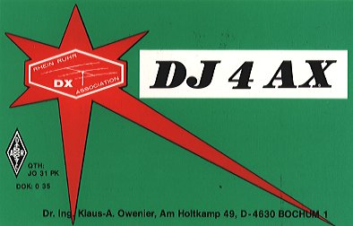
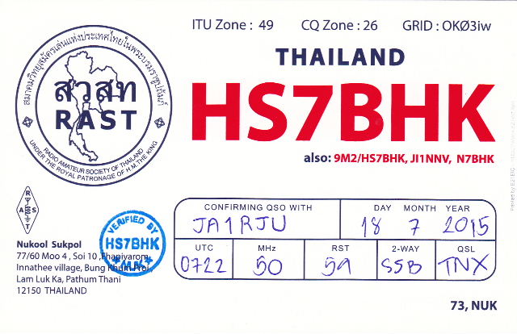

Flash ! DX


 |
|
|
|
 |
|
|
[Back Issues Apr.2018]
TIME:UTC(JST-09:00)
Report from JA1RJU(PM95sq)
30.Apr.2018(15:00b)
Report from JA1RJU(PM95sq)
29.Apr.2018(15:00c)
◎ Contest のためデジタル周波数（FT8=50.313MHz)はQRMで使用不能
BW/JH3GGC 06:14 50.130 SSB QSB Peak 59
BV1EP 06:34 50.145 SSB QSB weak
Report from JA1RJU(PM95sq)
28.Apr.2018(15:00b)
Report from JA1RJU(PM95sq)
27.Apr.2018(15:00b)
Report from JA1RJU(PM95sq)
26.Apr.2018(15:00c)
UR7FM/mm 07:42.15 50.313-614 WSJT FT8 QSO with JA1
5W1SA 07:43.30 50.313-1290 WSJT FT8 -12dB QSO with JR6
Report from JA1RJU(PM95sq)
25.Apr.2018(15:00b)
Report from JA1RJU(PM95sq)
24.Apr.2018(15:00b)
Report from JA1RJU(PM95sq)
23.Apr.2018(15:00c)
W7GJ 03:57 50.190 WSJT JT65 EME into JA3
HL5IVL 05:39 50.313 WSJT FT8 +09dB into JA7
HL5IVL 06:25.15 50.313-1137 WSJT FT8 -21dB CQ(PM46)
Report from JA1RJU(PM95sq)
22.Apr.2018(15:00c)
V63DX 01:05 50.313 WSJT FT8 -09dB CQ into JA5
W7GJ 06:45 50.190 WSJT JT65 -15dB EME into JA2
G8BCG 11:34 50.189 WSJT JT65 -14dB EME into JA7
ZS6NK 12:27 50.189 WSJT JT65 -24dB EME into JA2
ZS6NK 13:08 50.189 WSJT JT65 EME(QSO with VK5) into JA7
Report from JA1RJU(PM95sq)
21.Apr.2018(15:00d)
T88FT 06:12.15 50.313-1015 WSJT FT8 -15dB CQ(PJ77)
T88FT 06:12.45 50.313-1015 WSJT FT8 -04dB CQ
T88FT 06:13.45 50.313-1015 WSJT FT8 -20dB CQ
T88FT 06:14.00- 50.313-1012 WSJT FT8 -13dB Calling JA7 (No Ans)
T88FT 06:14.30- 50.313-1012 WSJT FT8 -13dB Calling JA1/2/7 (No Ans)
T88FT 06:18.15 50.313-1015 WSJT FT8 -19dB CQ(PJ77)
T88FT 06:19.00- 50.313-**** WSJT FT8 Calling JA1/2/7 (No Ans)
DS4EOI 08:17 50.110 CW CQ DX
Report from JA1RJU(PM95sq)
20.Apr.2018(15:00c)
T88IH 06:40.15 50.313-1459 WSJT FT8 -17dB QSO with JA7
T88IH 06:42.45 50.313-1472 WSJT FT8 -15dB CQ(PJ77)
T88IH 06:44.15 50.313-1472 WSJT FT8 -02dB QSO with JA1
T88IH 06:45.30- 50.313-1470 WSJT FT8 08dB-15dB QSO with JA1/2/3/7/0
T88IH 07:01.45 50.313-1468 WSJT FT8 +16dB/-02dB(QSO 10W)
T88IH 07:02.45- 50.313-1468 WSJT FT8 -02dB CQ
T88FT 07:09.45 50.313-1371 WSJT FT8 05dB QSO with JA7
T88FT 07:10.45- 50.313-1370 WSJT FT8 05dB QSO with JA1/2/3/4/7/9/0
T88FT 07:17.15 50.313-1369 WSJT FT8 -15dB QSO with DS3CHK
T88FT 07:21.15 50.313-1369 WSJT FT8 -04dB QSO with HL2IFR
T88FT 07:25.45 50.313-1563 WSJT FT8 -12dB QSO Calling JA3 (F.Out)
Report from JA1RJU(PM95sq)
19.Apr.2018(15:00b)
Report from JA1RJU(PM95sq)
18.Apr.2018(15:00b)
Report from JA1RJU(PM95sq)
17.Apr.2018(15:00b)
Report from JA1RJU(PM95sq)
16.Apr.2018(15:00c)
BD7YC 07:16.00 50.313-1868 WSJT FT8 -15dB QSO with BV5AB
BD7YC 07:17.30 50.313-1868 WSJT FT8 -14dB QSO with JA1
Report from JA1RJU(PM95sq)
15.Apr.2018(15:00d)
T88UW 04:48.30 50.313-1208 WSJT FT8 03dB Calling JA7
T88UW 04:50.30 50.313-1208 WSJT FT8 10dB QSO with JA1
T88UW 04:50.30- 50.313-1208 WSJT FT8 10dB QSO with JA1's
T88UW 04:58.00- 50.313-1208 WSJT FT8 10dB QSO with JA1/2/5
T88UW 05:13.30- 50.313-1211 WSJT FT8 -17dB CQ(PJ77)
T88UW 05:14.00- 50.313-1210 WSJT FT8 -09dB QSO with JA3
Report from JA1RJU(PM95sq)
14.Apr.2018(15:00d)
DU7/PA0HIP 08:28.00- 50.313-1703 WSJT FT8 into JA1/2/7
DU6GG 08:39.00- 50.313-1140 WSJT FT8 into JA1
DU6GG 08:43.00- 50.313-1545 WSJT FT8 into JA1/2-6/7
T88UW 09:13.00- 50.313-1293 WSJT FT8 into JA1
T88UW 09:13.30- 50.313-1293 WSJT FT8 -13dB QSO with JA4
T88UW 09:13.45- 50.313-1293 WSJT FT8 QSO with JA1-6/7
T88UW 09:20.30- 50.313-1292 WSJT FT8 01dB QSO with JA7
T88UW 09:21.30- 50.313-1293 WSJT FT8 03dB QSO with JA3
T88UW 09:24.30- 50.313-1292 WSJT FT8 09dB JA1-
DU6GG 09:42.30- 50.313-1600 WSJT FT8 -06dB with JA1
BV3UJ 09:43.45- 50.313-870 WSJT FT8 QSO with JA1-
DU6GG 09:46.30- 50.313-1550 WSJT FT8 -07dB CQ(PK10)
DU6GG 09:52.00- 50.313-1552 WSJT FT8 into JA1
Report from JA1RJU(PM95sq)
13.Apr.2018(15:00b)
Report from JA1RJU(PM95sq)
12.Apr.2018(15:00b)
Report from JA1RJU(PM95sq)
11.Apr.2018(15:00b)
◎関東地方は低気圧の接近で、都心部では午前中から南西からの23mを超える台風並みの"春の嵐"が吹き荒れた。この強風は今夜遅くまで続く模様。
Report from JA1RJU(PM95sq)
10.Apr.2018(15:00b)
Report from JA1RJU(PM95sq)
09.Apr.2018(15:00b)
Report from JA1RJU(PM95sq)
08.Apr.2018(15:00b)
Report from JA1RJU(PM95sq)
07.Apr.2018(15:00b)
Report from JA1RJU(PM95sq)
06.Apr.2018(15:00b)
◎関東地方は前線の通過で午前中から南西からの20mを超える台風並みの強風が吹き荒れている。
Report from JA1RJU(PM95sq)
05.Apr.2018(15:00b)
Report from JA1RJU(PM95sq)
04.Apr.2018(15:00b)
Report from JA1RJU(PM95sq)
03.Apr.2018(15:00b)
Report from JA1RJU(PM95sq)
02.Apr.2018(15:00b)
Report from JA1RJU(PM95sq)
01.Apr.2018(15:00b)
◎タイ国(HS)のRASTからの情報によると、従来タイ国ではコンテスト時のみにNBTC(Telecommunications Commission)からの特別許可を得て運用していた80mと6mバンドは、今後は許可を得ずに自由に運用する事が可能になったとのこと。ただし、運用は相変わらず「コンテスト」時のみに限定(海外からのゲスト運用も可能)されています。4月1日のRASTの総会で会長のHS1FVL(Jakkree)から正式に発表された。
今年の運用(6m)が予想されるコンテストは下記の通り。
○ ARRL June VHF Contest: 09-11.June,2018
○ CQ World Wide VHF Contest: 21-23.July,2018
○ ARRL September VHF Contest: 08-10.September,2018

